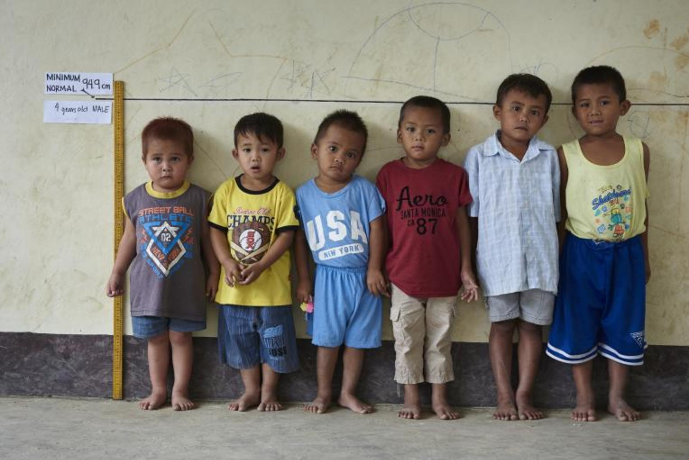
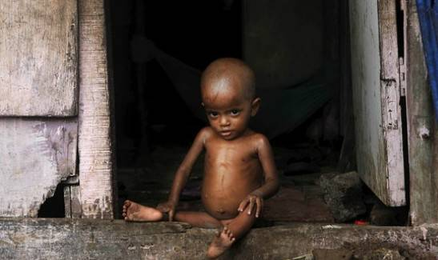

Yuk, kita belajar mengenai apa itu stunting...
Pada halaman ini kita akan mengupas tuntas mengenai stunting, mohon dibaca dengan seksama yaaa...
Stunting adalah suatu kondisi dimana anak mengalami gangguan pertumbuhan, sehingga tinggi badan anak tidak sesuai dengan usianya, sebagai akibat dari masalah gizi kronis yaitu kekurangan asupan gizi dalam waktu yang lama.
Berdasarkan Peraturan Menteri Kesehatan Republik Indonesia Nomor 2 Tahun 2020 tentang standar antropometri penilaian status gizi anak, stunting atau pendek merupakan status gizi yang didasarkan pada indeks tinggi badan menurut umur (TB/U) dengan z score kurang dari -2 SD (standar deviasi). stunting bukan hanya masalah gangguan pertumbuhan fisik saja, namun juga mengakibatkan anak menjadi mudah sakit, selain itu juga terjadi gangguan perkembangan otak dan kecerdasan, sehingga stunting merupakan ancaman besar terhadap kualitas sumber daya manusia di Indonesia (Kemenkes RI, 2020)
Stunting disebabkan oleh masalah asupan gizi yang di konsumsi selama kandungan maupun masa balita. Berikut beberapa penyebab terjadinya stunting yaitu:
Menurut WHO ciri-ciri stunting pada balita antara lain Pertumbuhan yang melambat, pertumbuhan gigi terlambat, , penurunan kemampuan focus, penurunan kemampuan memori, dan tidak banyak melakukan kontak mata (Pusat Data dan Informasi Kementrian Kesehatan RI, 2018).
Stunting mengakibatkan otak seorang anak kurang berkembang. Ini berarti 1 dari 3 anak Indonesia akan kehilangan peluang lebih baik dalam hal pendidikan dan pekerjaan dalam sisa hidup mereka. stunting bukan semata pada ukuran fisik pendek, tetapi lebih pada konsep bahwa proses terjadinya stunting bersamaan dengan proses terjadinya hambatan pertumbuhan dan perkembangan organ lainnya, termasuk otak (Achadi, 2019).
Dampak buruk dari stunting dalam jangka pendek bisa menyebabkan terganggunya otak, kecerdasan, gangguan pertumbuhan fisik, dan gangguan metabolisme dalam tubuh. Sedangkan dalam jangka panjang akibat buruk yang dapat ditimbulkan adalah menurunnya kemampuan kognitif dan prestasi belajar, menurunnya kekebalan tubuh sehingga mudah sakit, risiko tinggi munculnya penyakit diabetes, kegemukan, penyakit jantung dan pembuluh darah, kanker, stroke dan disabilitas pada usia tua, serta kualitas kerja yang tidak kompetitif yang berakibat pada rendahnya produktifitas ekonomi (Kemenkes RI, 2020)
Upaya intervensi untuk balita stunting difokuskan pada 1000 Hari Pertama Kehidupan (HPK) yaitu pada masa ibu hamil, ibu menyusui, dan anak dari usia 0 – 23 bulan, pada masa inilah penanganan balita pendek paling efektif dilakukan. 1000 hari pertama kehidupan ini meliputi 270 hari selama kehamilan dan 730 hari pertama setelah bayi dilahirkan yang telah dibuktikan secara ilmiah merupakan periode yang menentukan kualitas kehidupan. Oleh karena itu periode disebut dengan “periode emas”, “periode kritis” atau “window of opportuntiy” (Kementrian Kesehatan RI, 2022). Perkembangan otak, kecerdasan, ganggguan pertumbuhan fisik seperti stunting, dan gangguan metabolisme dalam tubuh merupakan akibat buruk yang akan timbulkan akibat permasalahan gizi pada periode tersebut dalam jangka panjang
Apakah pengetahuan anda mengenai stunting bertambah?
Yuk, kta ke halaman selanjutnya. Agar kita dapat menilai sejauh mana pemahaman setelah membaca materi diatas. Halaman Selanjutnya...